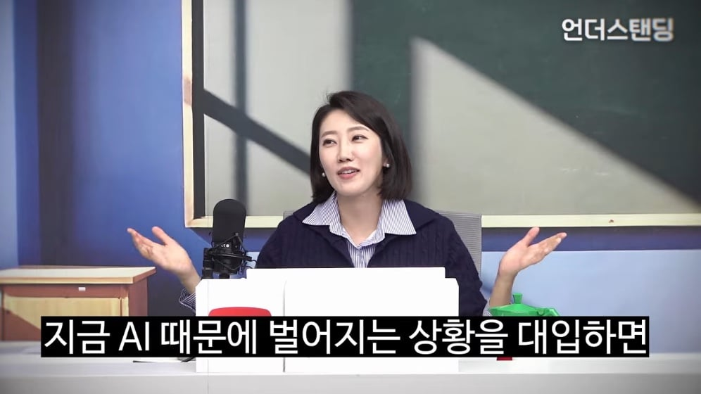
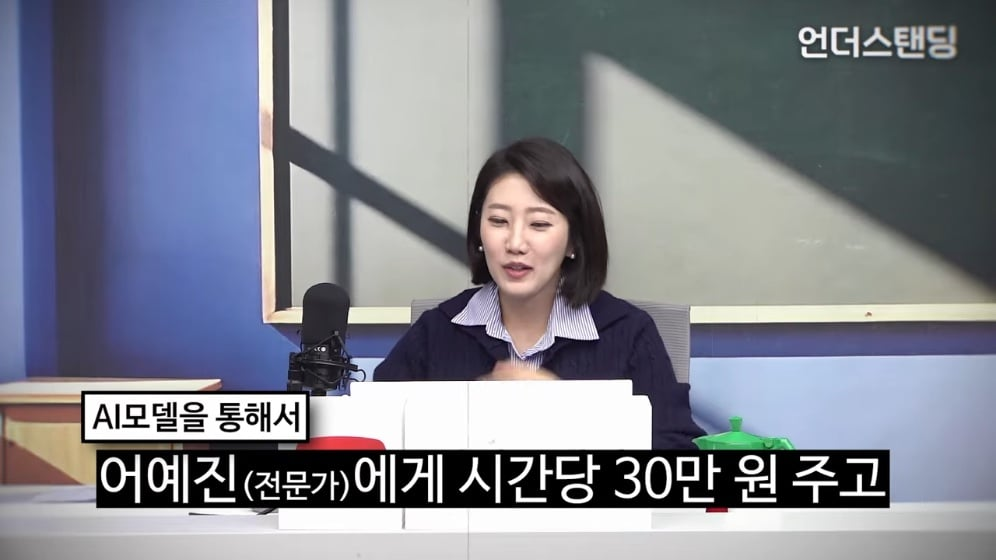

1. 단순 데이터 알바의 몰락과 고급 전문직 '알바'의 등장
-
메카니컬 터크의 종말: 과거 사진 속 강아지·고양이를 구별하거나 네모 박스를 치는 단순 데이터 라벨링(아마존 '메카니컬 터크' 등)은 대형언어모델(LLM)의 등장으로 2026년 9월 서비스를 종료하는 등 설 자리를 잃었습니다.
-
전문가 긱 이코노미(GIG Economy): AI 기업들이 인터넷의 무료 공개 데이터를 이미 전부 학습함에 따라, 이제는 전문가의 비공개 노하우와 섬세한 판단 기준을 원하고 있습니다.
-
시급 400달러(약 50만 원) 알바: 민권 변호사, 흉부 방사선과 의사, 화학·독성학 전문가 등 고급 인력이 링크드인 등을 통해 AI 학습 알바로 채용되고 있습니다.
-
메코(Meko) 플랫폼: 전문직만 타겟으로 하는 알바 중개 플랫폼으로, 설립 3년 만에 기업 가치가 약 27조 원(200억 달러)에 달할 정도로 대박을 터뜨렸습니다.
-
2. 노동 개념의 근본적 변화: '노동력 임대'에서 '지식 소유'로
-
기존 노동: 회사가 직원의 지식과 시간을 돈을 주고 '임대'하는 개념으로, 계약이 끝나면 지식과 노동력도 회사에서 빠져나갔습니다.
-
AI 시대의 노동: 전문가가 돈을 받고 자신의 경험과 판단 노하우를 AI에게 학습시키면, AI는 이를 영구적으로 내재화(복제)하여 소유하게 됩니다.
-
지식 덤핑과 직업적 가치 하락: 당장은 시간당 몇십만 원의 고수익을 벌지만, 자신이 구축한 복제본(AI)이 미래의 나 자신을 대체하거나 직업 전체의 희소성과 가치를 떨어뜨릴 수 있다는 구조적 불안감이 커지고 있습니다.
3. 세속적 AI와 종교 및 상담의 위기
-
실용성과 냉정함에 편향된 AI: 이코노미스트 분석에 따르면, 주요 실리콘밸리 AI 모델들은 일반 대중의 다양한 가치관과 달리 극도로 세속적·객관적이고 냉정한 경향을 보입니다.
-
종교 및 상담 영역의 변화: 고민을 털어놓았을 때 신앙적 위로나 교리적 해석 대신, 인근 심리상담 센터 링크를 주거나 운동을 권하는 등 차가운 현실적 대안만을 제시합니다.
-
종교계의 대응: AI 답변으로 인해 신도들이 전통적인 가르침이나 종교적 위안으로부터 멀어지는 위기를 겪자, 가톨릭(매지스테리움 등)이나 이슬람권에서는 해당 종교의 서적과 교리만을 학습시킨 전용 AI 챗봇을 직접 만들어 대응하고 있습니다.
3줄 요약:
-
단순 작업 위주의 데이터 알바가 사라지고, 의사·변호사 등의 고급 지식과 노하우를 시간당 수십만 원에 AI에게 다운로드하는 고급 데이터 알바 시장이 대박을 치고 있습니다.
-
짧은 시간 고수익을 얻을 수 있지만, 본인의 전문성을 AI에게 통째로 넘겨줌으로써 장기적으로는 본인 직업군의 가치를 떨어뜨리고 자발적 데이터 제공자로 전락할 수 있습니다.
-
세속적이고 냉정한 답변만을 제공하는 AI의 특성으로 인해 상담 및 종교 영역까지 흔들리면서, 종교계 자체 AI 모델을 개발하는 등 사회 전반의 노동과 종교 개념이 크게 개편되고 있습니다.
요즘 나이먹으니까 저 누나 관리 ㅈㄴ 잘된거 알겠더라 옛날에는 그냥 아줌마1이었는데 요즘 보니까 ㅈㄴ이쁨